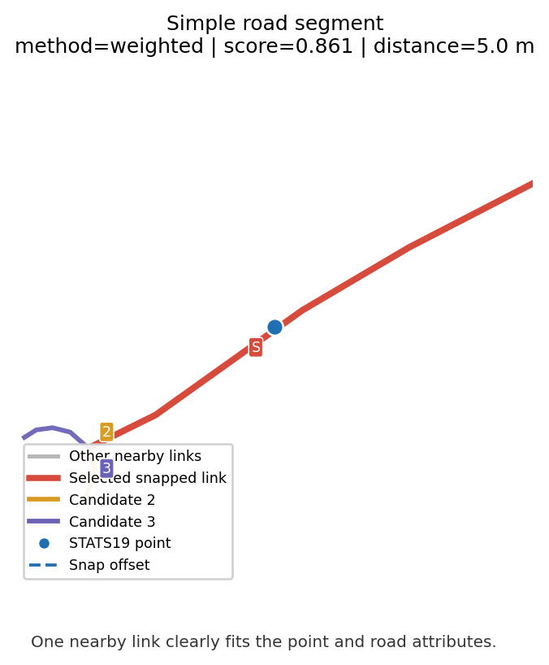
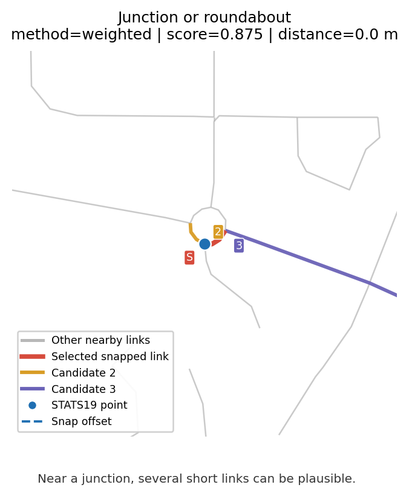
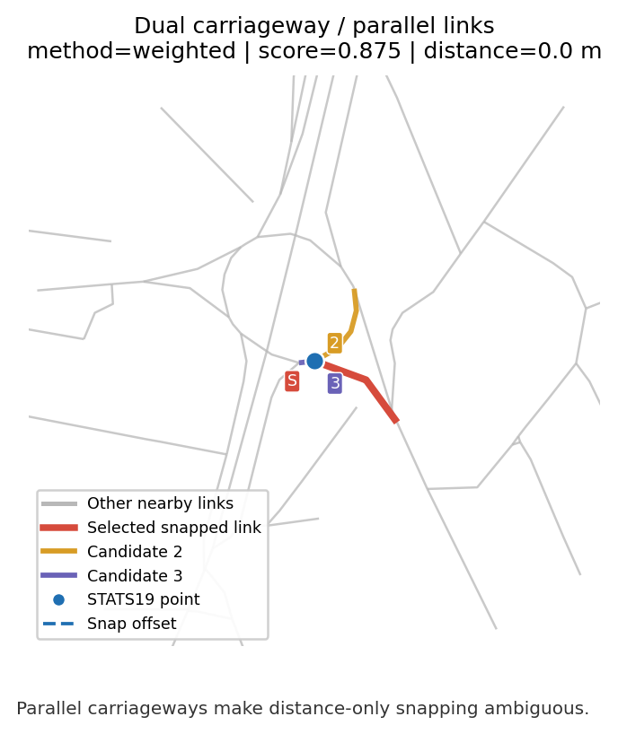
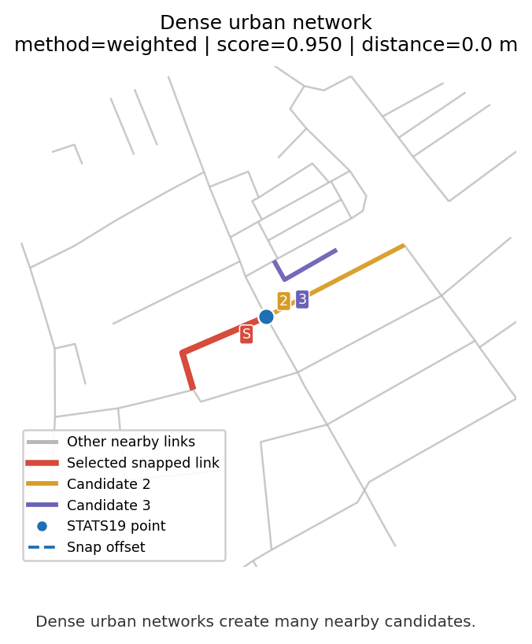
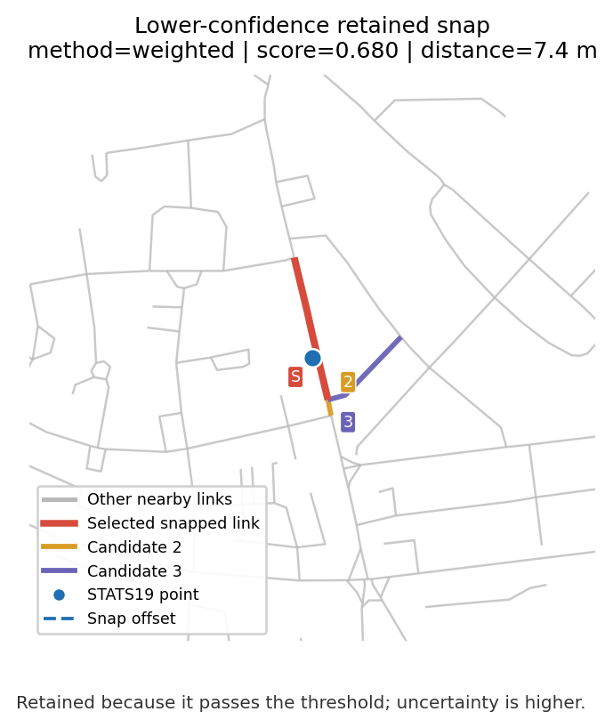
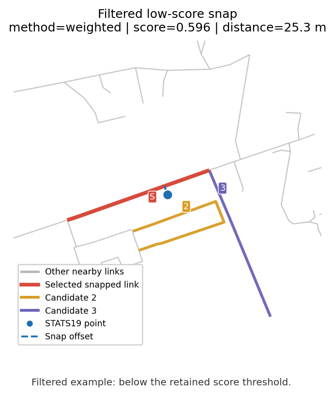

Joining Road Safety Datasets
1 Why joining is the hard part
The model target — collision rate per road link per year — does not exist in any single dataset. It has to be constructed by joining three sources that were never designed to be combined:
- STATS19 collisions are points with GPS coordinates and a police-recorded road name.
- AADF traffic counts are points at DfT count-point locations, keyed by
count_point_id. - WebTRIS sensors are points on the National Highways network, keyed by
site_id. - OS Open Roads links are line geometries with a
link_idand aroad_classification.
No shared key links them. Every connection has to be inferred from spatial proximity, road names, or both.
The joining stage is where most of the signal is gained or lost. A collision snapped to the wrong road changes both its traffic denominator and the road attributes it inherits. Under-reporting aside, snap quality is the dominant source of noise in the final rates.
2 What this page answers
- What is being joined, and in what order?
- How are collisions matched to road links, given that two collisions 10m apart might belong to an A-road and a parallel B-road?
- How are traffic counts attached to road links when AADF count points are sparse and WebTRIS sensors are even sparser?
- What happens to data beyond the distance caps, and why not just pick the nearest match?
- How is match confidence tracked and used?
3 Pipeline overview
The joining pipeline runs in five stages, implemented across clean.py, snap.py, and join.py:
| Stage | Input | Output | Join method |
|---|---|---|---|
| 1. Clean STATS19 | Raw collision CSVs | Validated collisions with road_name_clean |
LSOA coordinate check |
| 2. Snap collisions to links | Collisions + OS Open Roads | Collisions with link_id + snap_score |
Weighted multi-criteria |
| 3. Attach WebTRIS to AADF | AADF + WebTRIS | AADF with sensor features | Spatial nearest (5 km cap) |
| 4. Attach AADF to road links | Road links + (AADF + WebTRIS) | Road features per link × year | Spatial nearest (2 km cap) |
| 5. Aggregate to link × year | Snapped collisions + road features | road_link_annual.parquet |
Key join on link_id × year |
Each stage preserves confidence information — snap scores, distances, join methods, availability flags — so the feature engineering can filter on quality.
4 Stage 1: STATS19 cleaning
Collision cleaning happens in clean_stats19() and does three things that matter for the joins downstream.
4.1 Coordinate validation
Police-recorded lat/lon is generally reliable across Yorkshire forces, but a small number of records have systematic errors. The pipeline validates each collision’s coordinates against its recorded LSOA centroid using haversine distance:
- Collisions more than 10 km from their LSOA centroid are flagged as
coords_suspect = True. - Records outside the GB bounding box are flagged as
coords_valid = False.
Flagged records are not dropped — they remain available for non-spatial analysis — but they are excluded from the spatial snap.
Spatial snapping uses STATS19 latitude / longitude, not location_easting_osgr / location_northing_osgr. A previous notebook suspected a Yorkshire BNG grid-square error, but a direct check against the current raw DfT STATS19 CSV found no systematic mismatch: Yorkshire BNG fields agree with lat/lon-derived BNG positions within a few metres.
4.2 Road name reconstruction
STATS19 encodes road classification and number separately: first_road_class (integer code) and first_road_number. These are reconstructed into a single string:
class=1, number=62 → "M62"
class=3, number=64 → "A64"
class=4, number=1234 → "B1234"
class=6 → "" (unclassified, no named road)The result is stored as road_name_clean and feeds one of the four scoring dimensions in Stage 2.
4.3 COVID flag
is_covid = True for collisions in 2020 or 2021. Carried through all downstream tables so the modelling code can optionally exclude or separately model these years.
5 Stage 2: Snapping collisions to road links
This is the hardest join in the pipeline. A collision on a named road must be attached to the correct road link — and GPS noise, carriageway separation, and parallel minor roads all make this non-trivial.
5.1 Why nearest-neighbour fails
A naive nearest-neighbour snap fails in several common cases:
- Parallel roads. A collision on the M1 might be geometrically closer to a B-road running alongside than to the motorway itself.
- Dual carriageways. The two carriageways are separate OS Open Roads links; a collision reported on one side may snap to the other.
- GPS drift. Police-recorded coordinates can drift 20–50 m from the carriageway, especially on urban roads with tall buildings.
- Long links with centroid-based indexing. A 2 km motorway link has a centroid that could be 800 m from a collision 20 m off the road.
Snap.py addresses all four with two co-designed pieces: link densification for the spatial index, and multi-criteria scoring for disambiguation.
5.2 Densification: 25 m interpolation along each link
Before any matching, every OS Open Roads link is sampled at 25 m intervals along its LineString geometry. A 2 km motorway link becomes ~80 points; a 20 m urban link becomes 2 points. All densified points carry their parent link_id.
The KD-tree is built on these densified points, not on link centroids. This means a collision 20 m from the road will always find a candidate point within 25 m — regardless of link length.
5.3 Candidate selection
For each collision, the KD-tree returns the K = 20 nearest densified points within a 500 m search radius. Points are deduplicated to their parent links; the closest point per link is retained as that link’s candidate distance. The result is a set of up to 20 candidate links per collision.
5.4 Scoring: four dimensions
Each candidate link is scored on four dimensions. The composite score is a weighted sum with weights fixed at
| Dimension | Weight | What it measures |
|---|---|---|
| Spatial | 40% | Distance from collision to link, exponential decay |
| Road classification | 25% | STATS19 first_road_class vs OS road_classification |
| Junction / form of way | 25% | STATS19 junction_detail vs OS form_of_way |
| Road number | 10% | STATS19 reconstructed road name vs OS road_name_clean |
5.4.1 Spatial score
\[ s_\text{spatial}(d) = \exp\!\left(-\frac{d \log 2}{100}\right) \]
Exponential decay with a 100 m half-life. Concretely: 100 m → 0.50, 200 m → 0.25, 500 m → 0.03. Spatial score alone is not enough — a collision 30 m off an M-road will have a high spatial score against both the M-road link and an adjacent A-road link.
5.4.2 Road classification score
Each STATS19 road class (1 = Motorway, 2 = A(M), 3 = A, 4 = B, 5 = C, 6 = unclassified) has preferred / partial / penalty sets of OS classifications. Example for class 1 (Motorway):
- preferred (1.0):
Motorway - partial (0.5):
A Road - penalty (0.0):
B Road,Unclassified, etc.
Candidates not in any of the three sets score 0.5 (neutral).
5.4.3 Junction / form-of-way score
Uses junction_detail to constrain form_of_way. Key cases:
junction_detail = 0(not at a junction) penalises Slip Road and Roundabout candidates.junction_detail = 18(private drive) penalises Motorway and Slip Road.junction_detail = 99or-1(unknown) applies no constraint.
5.4.4 Road number score
Exact string match on road_name_clean. Low weight (10%) because the STATS19 road number field has well-known quality issues — it’s often missing or mis-entered. Treated as:
- 1.0 — exact match (e.g. STATS19 “M62” ↔︎ OS “M62”)
- 0.5 — STATS19 has no road number, or OS link has no road name (can’t contradict)
- 0.1 — mismatch
5.5 Output
The top-scoring candidate is returned per collision. The output carries every per-dimension score as well as the composite:
link_id,snap_distance_m,snap_scorescore_spatial,score_class,score_junction,score_numbersnap_method ∈ {weighted, invalid_coords, unmatched}
5.6 The 0.6 threshold
In join.py, only collisions with snap_score >= 0.6 are retained in the link-year aggregation. The threshold is empirical — chosen so the retained count matches a baseline from earlier pipeline versions.
The practical meaning of 0.6 depends on how the score components combine. With neutral (0.5) scores on class, junction, and number, a composite of 0.6 requires spatial ≈ 0.75 — about 42 m by the exponential decay. With strongly-matching attributes, spatial can be much lower and still pass.
The 0.6 threshold trades off recall against precision. Lowering it recovers more collisions (including correctly-matched ones at longer distances) but introduces more errors on dense multi-road areas. It has not been formally optimised against a gold-standard labelled set.
5.7 Worked graphical examples
The examples below show the spatial decision being made. The highlighted alternatives are nearby candidate links reconstructed for explanation; the exact internal candidate list is not stored in the final snapped output. The aim is to show why snapping quality matters before collisions are aggregated to road-link × year.
STATS19 collisions are point records, while the model needs counts on link_id × year. Snapping assigns each point to a plausible OS Open Roads link, then the retained snapped collisions are aggregated by link_id × year before joining to AADT, road geometry, and context features. Near junctions, dual carriageways, and dense urban networks, this is necessarily a spatial approximation rather than a literal observation of the carriageway used. Low-confidence, invalid, or unmatched records are filtered or handled separately before rate modelling.
The figures are generated statically by src/road_risk/outputs/build_snap_example_figures.py from existing processed outputs. Grey lines are nearby OS Open Roads candidates, red is the selected snapped link, and the blue point is the original STATS19 collision location. Orange and purple links mark the next two reconstructed nearby candidates shown for context. The labels S, 2, and 3 identify the selected link and the two highlighted alternatives; the dashed blue line shows the snap offset. The compact scoring tables below are reconstructed explanatory candidate tables: they reuse the weighted snap scoring functions, but the final snapped parquet stores exact component scores only for the selected link, not for every losing candidate.
Small schematic of the weighted snap:
STATS19 point → find nearby densified Open Roads candidates → score candidates → keep highest scoring link → apply 0.6 threshold → aggregate retained collisions to link_id × year
The first table is source-row context from the cleaned STATS19 collision parquet. These fields are not the snap output: they are the original collision row values carried through cleaning, shown here for the six example rows chosen by the figure script.
| Example type | Original STATS19 row context |
|---|---|
| Simple road segment | collision_index=2022501162401; 2022-04-04 07:59; severity Slight; 2 vehicles, 1 casualty; first road A38; single carriageway; 50 mph; not at junction or within 20 metres; raining, no high winds; wet or damp; point (-4.349419, 50.407907). |
| Junction or roundabout | collision_index=20171341K0936; 2017-01-20 12:00; severity Slight; 2 vehicles, 1 casualty; first road A650; roundabout; 60 mph; STATS19 junction_detail=0 (not at junction or within 20 metres); fine, no high winds; dry; point (-1.520043, 53.708393). |
| Dual carriageway / parallel links | collision_index=2018200265540; 2018-01-23 14:35; severity Slight; 2 vehicles, 3 casualties; first road A4540; road type roundabout; 40 mph; second road A38; raining, no high winds; wet or damp; point (-1.888107, 52.491773). |
| Dense urban network | collision_index=2019051912399; 2019-09-19 18:00; severity Slight; 2 vehicles, 1 casualty; first road unclassified; single carriageway; 30 mph; STATS19 junction_detail=13 in the cleaned row; fine, no high winds; dry; point (-3.038868, 53.430502). |
| Lower-confidence retained snap | collision_index=2023010445298; 2023-05-26 19:03; severity Slight; 1 vehicle, 1 casualty; first road class C with no road number; single carriageway; 20 mph; not at junction or within 20 metres; fine, no high winds; dry; point (-0.249922, 51.516427). |
| Filtered low-score snap | collision_index=2015950000240; 2015-01-22 08:05; severity Serious; 2 vehicles, 1 casualty; first road B1345; single carriageway; 60 mph; not at junction or within 20 metres; fine, no high winds; wet or damp; point (-2.746766, 56.055312). |
The next table is snap-output traceability from quarto/outputs/figures/snap-examples-manifest.json. It shows what the snap step produced for those same STATS19 rows, including the selected OS Open Roads link_id and whether the row is retained for link-year aggregation.
| Example type | STATS19 collision_index | Year | Snap method | Score | Distance | Selected link id | Candidates shown | Status | What this shows |
|---|---|---|---|---|---|---|---|---|---|
| Simple road segment | 2022501162401 |
2022 | weighted | 0.861 | 5.0 m | 65BCF56A-4692-46C5-AF86-284DA73DF77E |
3 | retained | One nearby link clearly fits the point and road attributes. |
| Junction or roundabout | 20171341K0936 |
2017 | weighted | 0.875 | 0.0 m | E43FE188-A37C-4085-BC80-8F3009AD643C |
17 | retained | Near a junction, several short links can be plausible. |
| Dual carriageway / parallel links | 2018200265540 |
2018 | weighted | 0.875 | 0.0 m | 7DF69055-C6EC-459B-AD10-3C683FFCD19E |
59 | retained | Parallel carriageways make distance-only snapping ambiguous. |
| Dense urban network | 2019051912399 |
2019 | weighted | 0.950 | 0.0 m | 0370946C-80EB-4F17-A5B4-3D8A25075146 |
71 | retained | Dense urban networks create many nearby candidates. |
| Lower-confidence retained snap | 2023010445298 |
2023 | weighted | 0.680 | 7.4 m | F5232992-2B80-43BB-ACED-ECA1538996AB |
135 | retained | Retained because it passes the threshold; uncertainty is higher. |
| Filtered low-score snap | 2015950000240 |
2015 | weighted | 0.596 | 25.3 m | E2DE2F6D-9788-4273-9848-86AA8B014DAD |
40 | filtered | Filtered example: below the retained score threshold. |

Original STATS19 row: collision_index=2022501162401; 2022-04-04 07:59; severity Slight; first road A38; single carriageway; 50 mph; not at junction; raining; wet surface; point (-4.349419, 50.407907).
What this shows: The ambiguity is limited here: the collision point sits close to one plausible single-carriageway link, and the next nearby candidates are much farther away. The snap chooses the red A-road link, which is plausible because both distance and road class support it. Confidence is high, although it is still a spatial linkage rather than ground truth. This collision is retained and later counted under its selected link_id × year.
Worked scoring breakdown (reconstructed): The selected link is not chosen by distance alone. Each nearby candidate is scored on distance, road class, junction/form-of-way agreement, and road-number agreement; the highest composite score is selected. These reconstructed composites use line-to-point distances in the figure window, so the selected-row composite can differ slightly from the saved snap score in the traceability table.
| Candidate | Role | Distance | Spatial | Class | Junction | Number | Composite | Why it matters |
|---|---|---|---|---|---|---|---|---|
| Rank 1 | Selected link | 1.5 m | 0.990 | 1.000 | 0.500 | 1.000 | 0.871 | Closest plausible A38 link. |
| Rank 2 | Alternative 2 | 146.2 m | 0.363 | 1.000 | 0.500 | 1.000 | 0.620 | Same road evidence, but much weaker spatial support. |
| Rank 3 | Alternative 3 | 146.2 m | 0.363 | 1.000 | 0.500 | 1.000 | 0.620 | Similar to candidate 2, so distance separates it from the selected link. |
Here, candidates 2 and 3 match the road number and class, but their spatial score is much lower. The selected link wins because it is both the right road class/number and much closer to the collision point.

Original STATS19 row: collision_index=20171341K0936; 2017-01-20 12:00; severity Slight; first road A650; road type roundabout; 60 mph; junction_detail=0; dry surface; point (-1.520043, 53.708393).
What this shows: The ambiguity is the junction itself: several short roundabout or approach links are close enough to be plausible. The snap chooses one roundabout link, which is plausible because the point lies on the junction geometry and the form-of-way matches the junction context. Confidence is lower than on an open segment because adjacent junction links can be almost tied. The retained snap contributes one collision to the selected link-year.

Original STATS19 row: collision_index=2018200265540; 2018-01-23 14:35; severity Slight; first road A4540; second road A38; road type roundabout; 40 mph; wet surface; point (-1.888107, 52.491773).
What this shows: The ambiguity is the cluster of near-parallel and junction links around the point. The snap chooses the red dual-carriageway link; this is plausible because it is colocated with the point and matches the broad road context. It is not a perfect carriageway-level assertion: nearby links have very similar geometry, so confidence depends on the combined score rather than distance alone. The collision is retained and aggregated to the selected link-year.

Original STATS19 row: collision_index=2019051912399; 2019-09-19 18:00; severity Slight; first road unclassified; single carriageway; 30 mph; junction_detail=13; dry surface; point (-3.038868, 53.430502).
What this shows: The ambiguity is network density. Many short urban links are close to the collision point, and more than one reconstructed nearby candidate can score similarly. The snap chooses an unclassified single-carriageway link, which is plausible because it is at the point and matches the recorded road context. Confidence is still qualified by the dense street pattern. The retained collision is counted on that selected link-year before traffic and context features are joined.
Worked scoring breakdown (reconstructed): Dense urban examples are useful because they show the limit of the method as well as the method itself: several short links can receive near-identical evidence.
| Candidate | Role | Distance | Spatial | Class | Junction | Number | Composite | Why it matters |
|---|---|---|---|---|---|---|---|---|
| Rank 2 | Selected link | 0.0 m | 1.000 | 1.000 | 1.000 | 0.500 | 0.950 | Saved snap target; all non-number evidence is strong. |
| Rank 1 | Alternative 2 | 0.0 m | 1.000 | 1.000 | 1.000 | 0.500 | 0.950 | Reconstructs as tied, showing genuine local ambiguity. |
| Rank 3 | Alternative 3 | 38.1 m | 0.768 | 1.000 | 1.000 | 0.500 | 0.857 | Still plausible, but less spatially supported. |
Here, the selected link and candidate 2 reconstruct as a tie: the method has found a plausible top-scoring local link, but it should not be read as a perfect carriageway-level truth. Candidate 3 is also plausible, but lower distance support drops its composite score.

Original STATS19 row: collision_index=2023010445298; 2023-05-26 19:03; severity Slight; first road class C with no road number; single carriageway; 20 mph; not at junction; dry surface; point (-0.249922, 51.516427).
What this shows: This is lower confidence because the point is surrounded by many nearby links and the selected score is only just above the retention threshold. The snap chooses the closest unclassified single-carriageway link, which is plausible spatially, but nearby alternatives mean the exact road assignment is less certain. Because the score remains above 0.6, the collision is retained and included in the downstream link_id × year collision count.

Original STATS19 row: collision_index=2015950000240; 2015-01-22 08:05; severity Serious; first road B1345; single carriageway; 60 mph; not at junction; wet surface; point (-2.746766, 56.055312).
What this shows: The ambiguity is both spatial and attribute-based: the selected link is close to the point, but the saved weighted score falls below 0.6 after combining distance, road class, junction context, and road-number evidence. The red link is the best weighted snap stored for this collision, but confidence is too low for the modelling target. This collision is filtered out before link-year aggregation, so it does not add to any road-link collision count used for rate modelling.
5.8 Fallback: snap_quick and snap_collisions_to_roads
snap.py also provides snap_quick — a single sjoin_nearest call with a configurable cap (default 500 m). No scoring. It exists as a baseline for comparing against the weighted approach via compare_snaps(), and as a fast option for pipeline iteration where snap precision isn’t the current concern.
If snapped_weighted.parquet is not available, join.py falls back to snap_collisions_to_roads() — an attribute-match-then-spatial pipeline that predates snap_weighted. It’s kept only for regeneration and should not be used for production runs.
6 Stage 3: WebTRIS → AADF
WebTRIS sensors are point locations on motorways and major A-roads. AADF count points are also points. Neither has a shared ID — the link is spatial.
_attach_webtris_to_aadf() runs a per-year nearest-neighbour join from AADF points to WebTRIS sites using geopandas.sjoin_nearest with max_distance = 5000 m. Beyond 5 km, WebTRIS features are nulled rather than retaining the nearest-but-far match.
The per-year scoping matters: a 2019 WebTRIS reading only attaches to the 2019 AADF row, not to adjacent years. This keeps temporal alignment clean but means WebTRIS columns are NaN for AADF years outside the WebTRIS pull window (2019, 2021, 2023).
6.1 Why nullify beyond the cap?
An alternative would be to keep the nearest WebTRIS match regardless of distance. This is rejected because:
- Beyond 5 km, the sensor and the count point are likely on different corridors with different traffic composition.
- A “nearest” match that is actually irrelevant is worse than missing data — it adds noise that looks like signal to the model.
NaN is the honest representation of “no nearby sensor”.
7 Stage 4: AADF → road links
Attaching AADF traffic counts to OS Open Roads links is run per year, again via sjoin_nearest. The distance is measured from each road link’s centroid to the nearest AADF count point.
7.1 Distance cap: 2 km
Beyond 2 km, the count point is treated as not representative of the link. Features are set to NaN rather than retained. In practice this means:
- Motorway and major A-road links almost always have AADF attached (count points are dense on these roads).
- Minor rural roads frequently have NaN traffic — no count point is close enough.
7.2 Street-name fallback
For links beyond the 2 km cap that have a street_name_clean, a secondary name-match is attempted against AADF road_name_clean. This recovers named minor roads (e.g. residential streets with a count point more than 2 km away along the same named road).
Matches recovered this way are tagged aadf_join_method = 'name_match' so they can be identified separately from spatial matches.
7.3 What this means for the model
Minor-road links typically have aadf_available = False, which means:
- No
collision_rate_per_mvkm(no denominator) - No HGV percentage features
has_rate = False— these rows can be filtered out of rate modelling
This is a deliberate choice over imputing a fake flow value. Minor-road rate modelling requires a separate AADT estimation step, which is out of scope for the current joining pipeline.
8 Stage 5: Aggregation to link × year
build_road_link_annual() produces the final modelling table.
8.1 Filtering snapped collisions
Only collisions with snap_method in ['weighted', 'attribute', 'spatial'] are included, and if snap_score is available the >= 0.6 threshold is applied. Collisions marked invalid_coords or unmatched are excluded from the rate calculation but their counts are available separately.
8.2 Per-link aggregation
For each link_id × year group:
collision_count— total injury collisions snapped to the linkfatal_count,serious_count,slight_count— severity breakdowncasualty_count— sum of casualties across the collisionshgv_collision_count— collisions where any involved vehicle hasvehicle_typein{19, 20, 21}mean_vehicles_per_collision— proxy for collision complexity
8.3 Joining road attributes
OS Open Roads metadata (road_classification, road_function, form_of_way, link_length_km, is_trunk, is_primary) is joined onto the aggregated table via link_id. This is a direct key join — no spatial logic.
8.4 Final rate calculation
vehicle_km = all_motor_vehicles × link_length_km × 365
collision_rate_per_mvkm = collision_count / (vehicle_km / 1e6)Rate is NaN where all_motor_vehicles is NaN (see Stage 4). The has_rate flag in features.py makes this explicit.
9 Quality tracking
Several confidence fields propagate from the joining pipeline into the feature table:
| Field | Meaning |
|---|---|
snap_score |
Composite score 0–1 from weighted snap |
score_spatial, score_class, score_junction, score_number |
Per-dimension breakdown for diagnostics |
snap_method |
weighted / spatial / unmatched / invalid_coords |
snap_distance_m |
Metres from collision to snapped link |
aadf_snap_distance_m |
Metres from link centroid to matched count point |
aadf_join_method |
spatial or name_match |
aadf_available, webtris_available |
Boolean flags for downstream filtering |
The per-dimension scores are particularly useful for diagnosing where the weighted snap is making compromises — a link-year with mean(score_spatial) = 0.9 and mean(score_class) = 0.4 is saying “I’m confident about the geometry but the attribute match is weak”, which is exactly the kind of signal that should reduce confidence in any rate derived from those collisions.
10 Quick-vs-weighted comparison
compare_snaps() runs both methods on the same collisions and reports agreement rate, per-link-id disagreements, and weighted-only matches. This is the standard QA step when changing any scoring parameter — the diff against snap_quick tells you what the scoring is actually doing relative to pure proximity.
Typical observations from the Yorkshire pilot:
- Agreement is high on motorways and major A-roads (separated carriageways aside), where the nearest link is almost always the correct one.
- Disagreement concentrates on urban areas with parallel A / B / minor roads, and at junctions where slip roads sit close to the main carriageway.
- Weighted-only matches occur when the nearest link is beyond the quick-snap 500 m cap but within 500 m of a same-class alternative — these are rare but legitimate.
11 Known issues and tradeoffs
11.1 Weights are fixed, not learned
The 40/25/25/10 split across spatial/class/junction/number is a design choice. No formal optimisation has been run against a labelled validation set. The weights feel broadly right — spatial dominates, attributes act as a tiebreaker, road number is down-weighted because of its known quality issues — but this is engineering judgement, not a fitted parameter.
11.2 Distance caps are empirical
The 100 m half-life, 500 m search radius, 2 km AADF cap, and 5 km WebTRIS cap are all engineering choices. Tighter caps increase precision but reduce coverage. No sensitivity analysis has been run.
11.3 Error compounding across stages
Joins are chained: WebTRIS→AADF→link. A 4 km WebTRIS match plus a 1.8 km AADF match means the WebTRIS sensor is effectively 5+ km from the road link. The individual caps don’t bound the total separation. In practice this mostly affects minor roads that already have aadf_available = False, so the compounding is concentrated where the data is least used anyway.
11.4 Road name normalisation is strict
road_name_clean is an uppercased whitespace-stripped match. “M62” matches “M 62” (after cleaning) but not “M062” or “M62 Westbound”. Non-standard road name encoding silently fails the road number score — it falls through to the spatial + class + junction components, which usually still yield a correct match but with a lower composite score.
11.5 Dual carriageways
OS Open Roads represents dual carriageways as two separate links. Nearest-neighbour can snap a collision to the wrong carriageway, particularly on motorways where GPS drift + narrow carriageway separation produce ambiguous cases. The weighted snap does not distinguish between carriageways — both have the same road_name_clean and usually the same road_classification and form_of_way, so the composite score is nearly tied.
11.6 Coordinate-source limitations
STATS19 lat/lon is reliable but not perfectly accurate — drift of 20–50 m is normal. The 100 m spatial half-life was chosen with this in mind: a correct match at 50 m still scores 0.71, which is high enough to dominate if the attribute scores are at least neutral.
12 Next steps
The joined table feeds into:
features.py— rate calculation, log-transforms, temporal features, lag features.model/collision.py— regression oncollision_rate_per_mvkm.